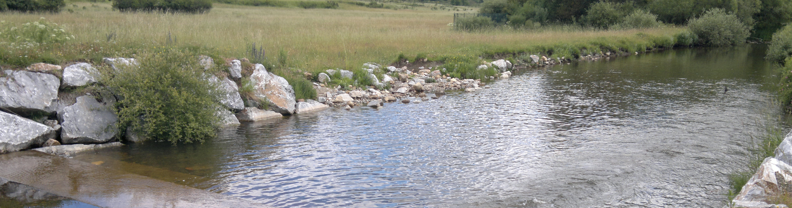
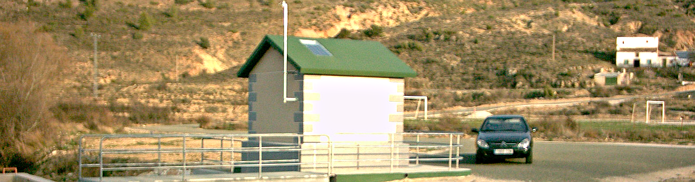

Construcciones Hidráulicas Conde Zapata, CONZA, Firm founded on 2007, is organized out of the
infrastructure and staff of HIDROTEL Montajes

History
Started on 2001. CONZA began as a Civil Hydraulic
Works specialist, working in direct coordination with HIDROTEL, and has progressively acquired
competences and responsibilities in all its fields of activity. Although being a younger Company,
once unified its Administrative and Technical Management on 2009 with HIDROTEL, nowadays is in the
group the one developing activities concerning Project development and control, on site works and
job execution.

Experience
Having its unified Technical Management more than twenty five years of deep
experience in the water control and monitoring business, both around Spain
and abroad, (Germany, France, Australia, North and South Americas), and having
been awarded and executed a significant number of projects and works of consideration
in the national hydrological market, CONZA offers its services as a specialist in
environmental control turnkey projects and integrated solutions –including civil works,
sensors and instruments, communications and information systems- to all Public and Private
Agencies, Firms and concerned particulars.